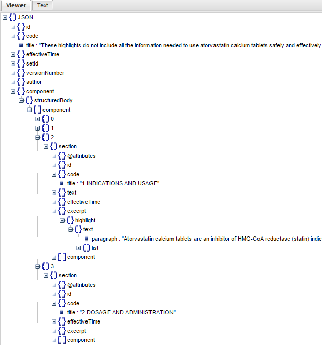
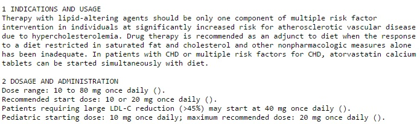

Iterating over the Response Array
JSON Arrays in PHP
Recall from the last step that we ended up with an XML string as our response. This is because DailyMed's /spl/{SETID} resource does not return JSON. As mentioned previously, most, but not all of the resources return JSON so this particular resource is an exception. In this section of the guide, I will explain how to convert XML to JSON, then I will go over several strategies for iterating over the DailyMed API JSON objects and arrays using PHP.
How to Iterate?
At this point, we have several options. We can convert the XML object into a JSON object, or we can convert the XML object into the familiar JSON array. Which one we use depends on the data. In this guide, we will present different strategies using either format so that you can view the syntactical and logical differences, and decide for yourself how you you want to process the response data.
Converting a XML String to JSON
It is simple to convert XML to JSON in PHP. First, we need to convert the XML string to an XML object using the PHP function simplexml_load_string. Then, we will encode the resulting XML object as a JSON string, which we can then decode to either a JSON object, or an associative array. Note the TRUE argument in to the call to decode to convert a JSON string to an associative array.
/*XML Object to PHP Object*/
$xmlObject = simplexml_load_string($xmlString);
$jsonString = json_encode($xmlObject);
$jsonArray = json_decode($jsonString);/*XML Object to Associative Array*/
$xmlObject = simplexml_load_string($xmlString);
$jsonObject = json_encode($xmlObject);
$jsonArray = json_decode($jsonObject,TRUE);Iterating over the JSON Object
Viewing the JSON string through a JSON viewer, we can see that most of the interesting information (indications, contraindications, dosing information, adverse events etc.) is located in the component object in the first layer of properties.
As you can see from the above, iterating through this JSON object will not be a simple task, as it is an object with multiple nested arrays and objects. More specifically, it is multidimensional, an object with nested objects and/or associative and indexed arrays with no logical pattern. As practice, one could try iterating through the object using the following PHP code to access the indication(s) of atorvastatin, along with its dosage and administration information:
What we can see from the image above is that the pertinent details of a medication (indications, contraindications, dosage) seem to be nested within the component array that's nested in the structuredBody object, which is in turn nested within another component object. This implies that we do not need to search the previous objects. Instead, we can dereference the JSON object until we reach the component array. Here is the code to access that property of the JSON object:
$componentArr = $jsonObj->component->structuredBody->component;So, now what? Well, we can see from the diagram above that the value of the inner component property is actually an array. In that case, we can iterate over it using foreach.
foreach($componentArr as $k=>$v){}Now we are ready to isolate the titles and extract the data which fit under those titles, but first, a word about defense programming.
Defensive Programming
To prevent errors being thrown when we attempt to access non-existant properties, we should check if the property exists before attempting to access it. With PHP objects, this can be accomplished using the function property_exists. This function allows us to use short-circuit evaluation. That is, the first condition must be true before we attempt to access the element to evaluate equality.
if(property_exists($v->section,'title') && $v->section->title=='1 INDICATIONS AND USAGE'){}Retrieving the Relevant Data
Returning to our scenario, we want to retrieve information about atorvastatin's indications, dosage forms, dosing, contraindications and side effects. We are now ready to complete the code that we started above to access specific property/value pairs in the JSON object.
$componentArr = $jsonObj->component->structuredBody->component;
foreach($componentArr as $k=>$v){
if(property_exists($v->section,'title') && $v->section->title=='1 INDICATIONS AND USAGE'){
echo $v->section->title;
echo "\n";
if(property_exists($v->section,'text') && property_exists($v->section->text,'paragraph')) {
echo $v->section->text->paragraph;
echo "\n\n";
}
}
if(property_exists($v->section,'title') && $v->section->title=='2 DOSAGE AND ADMINISTRATION'){
echo $v->section->title;
echo "\n";
if(property_exists($v->section->excerpt->highlight->text,'paragraph')) {
foreach($v->section->excerpt->highlight->text->paragraph as $v1){
echo "$v1\n";
};
echo "\n";
}
}
if(property_exists($v->section,'title') && $v->section->title=='3 DOSAGE FORMS AND STRENGTHS'){
echo $v->section->title;
echo "\n";
if(property_exists($v->section,'text') && property_exists($v->section->text,'paragraph')){
echo $v->section->text->paragraph;
echo "\n\n";
}
}
if(property_exists($v->section,'title') && $v->section->title=='4 CONTRAINDICATIONS'){
echo $v->section->title;
echo "\n";
if(property_exists($v->section->excerpt->highlight,'text')){
foreach($v->section->excerpt->highlight->text->paragraph as $v2){
echo "$v2\n";
}
echo "\n";
}
}
if(property_exists($v->section,'title') && $v->section->title=='5 WARNINGS AND PRECAUTIONS'){
echo $v->section->title;
echo "\n";
if(property_exists($v->section->excerpt->highlight,'text')){
foreach($v->section->excerpt->highlight->text->paragraph as $v2){
echo "$v2\n";
}
echo "\n";
}
}
if(property_exists($v->section,'title') && $v->section->title=='6 ADVERSE REACTIONS'){
echo $v->section->title;
echo "\n";
if(property_exists($v->section->excerpt->highlight,'text')){
foreach($v->section->excerpt->highlight->text->paragraph as $v2){
echo "$v2\n";
}
echo "\n";
}
}
}The above code will return something similar to this:
Iterating over the JSON Array
If we had converted our XML object into an ssociative array, we can iterate over it similar to the way we iterated over the JSON object. Although outputing the JSON string using var_dump or print_r will show us all of the keys and values, it is still quite difficult to read from the browser (even if the Content-Type is set to plain/text). Pasting the JSON string into the CodeBeautify JSON Viewer can make it much easier to find the fields we want to extract.

As you can see, iterating through this array will not be a simple task, as it is a complex array with nested arrays. More specifically, it is multidimensional, an associative array with nested associative and indexed arrays with no logical pattern. As practice, one could try iterating through the array using the following PHP code to access the indication(s) of atorvastatin, along with its dosage and administration information:
$componentArr = $jsonArray['component']['structuredBody']['component'];
foreach($componentArray as $k=>$v){
if(array_key_exists('title',$v['section']) && $v['section']['title']=='1 INDICATIONS AND USAGE'){
echo $v['section']['title'];
echo "\n";
if(array_key_exists('text',$v['section']) && array_key_exists('paragraph',$v['section']['text'])) {
echo $v['section']['text']['paragraph'];
echo "\n\n";
}
}
if(array_key_exists('title',$v['section']) && $v['section']['title']=='2 DOSAGE AND ADMINISTRATION'){
echo $v['section']['title'];
echo "\n";
if(array_key_exists('paragraph',$v['section']['excerpt']['highlight']['text'])) {
foreach($v['section']['excerpt']['highlight']['text']['paragraph'] as $v1){
echo "$v1\n";
};
echo "\n";
}
}
This looks almost identical to the code that we used for the JSON object, except the we use the square-bracket notation to access array elements, and array_key_exists instead of property_exists.
Your php page should now look something like this.

You've probably noticed how long and drawn out the above code is. While it may be a good practice to iterate through an multidimensional associative array, this approach quickly becomes tiresome, especially if large amounts of data are needed. There must be a better solution that more effectively predicts what the elements are without having to write large amounts of nested foreach loops.
Recursive Iterators
You may be thinking that using a recursive approach may be helpful for flattening out the nested arrays to make it more predictable to traverse. Let's try this:
$iterator = new RecursiveIteratorIterator(new RecursiveArrayIterator($jsonArray));
foreach($iterator as $key=>$value) echo "$key=$value\n";or more succinctly:
foreach(new RecursiveIteratorIterator(new RecursiveArrayIterator($jsonArray) as $key=>$value)
echo "$key=$value\n";The first line defines a new iterator using new RecursiveArrayIterator. However, because the arrays are nested, we need another iterator to recursively iterate over it, that's where the new RecursiveIteratorIterator comes in. The RecursiveIteratorIterator The effect is to "flatten" out the multidimensional array into a one-dimensional array. This is a portion of the result based on the code above:

A quick peruse through the result tells us that this is insufficient for our needs. Notice that ID is used on three occasions just in this small snippet alone. However, because we now know that the key names repeat themselves, they are somewhat irrelevant. Let's try a slight modification to make things even easier to read:
$indexedArray = iterator_to_array(new RecursiveIteratorIterator(new RecursiveArrayIterator($jsonArray)),FALSE);
print_r($indexedArray);This generates the following output:

As the variable names suggest, the code above outputs the more familiar indexed array, which then allows us to access elements easily using an index. While this approach works, the indices are inconsistent between different product labels stored in the API, so this approach is not feasible for multiple searches for different drugs.
Accessing Elements in a Multidimensional Array
Because we know the keys and values of the array, we do not need to iterate endlessly to find the values we require. Instead, we can access the same elements in different drug product labels directly. The reason we do not build a one-size-fits-all template to access all of the elements is that on examination of the different product labels, the nesting of elements are often inconsistent, and accessing the same elements for different drugs requires completely different paths.For instance, comparing atorvastatin to amlopidine, the paths for accessing their dosage arrays are quite different.
/*Atorvastatin Dose*/
$jsonArray['component']['structuredBody']['component'][3]['section']['excerpt']['highlight']['text']['paragraph'];
/*Amlodipine Dose*/
$jsonArray2['component']['structuredBody']['component'][2]['section']['component'][0]['section']['text']['paragraph'];Because paths to similar elements differ inconsistently between medication labels, building a template to access the same elements requires more complex logic.